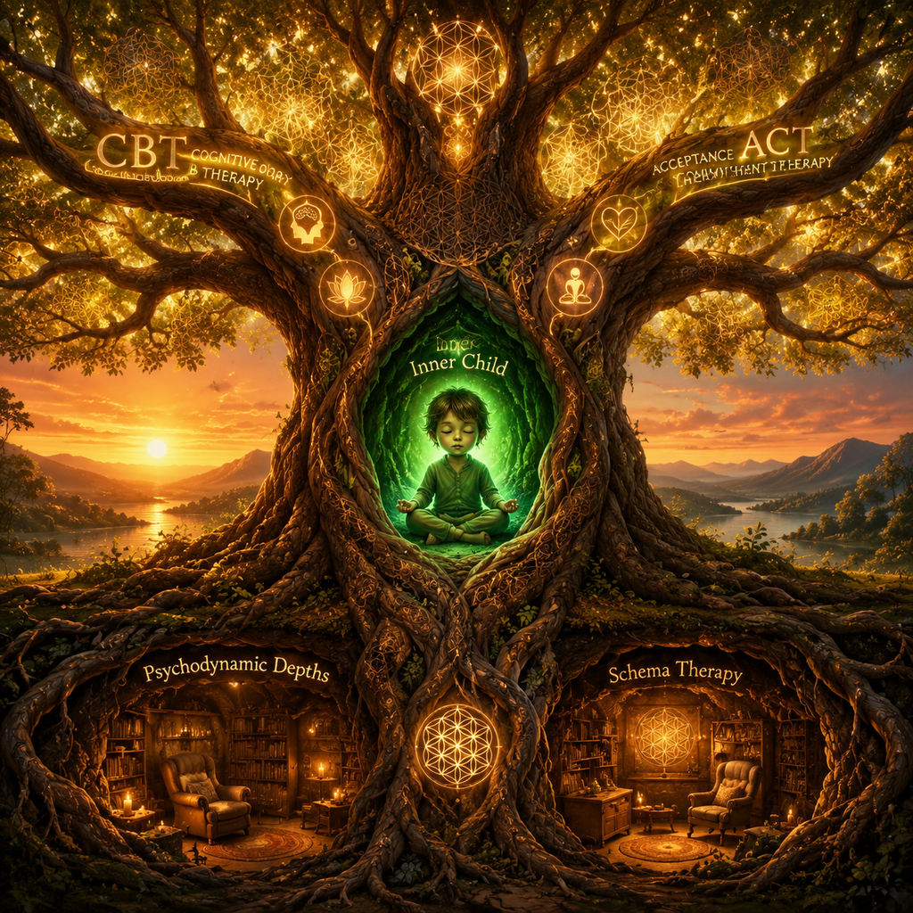

🌱 رشد آگاهی:
0%
🎵
موسیقی
📄 کارنامه
🔄
+
−
⟲

عنوان
×
💡 مبنای علمی
👤 سناریو و تحلیل
🔍 راهنمای بالینی
✍️ تمرین درمانی
محتوا...
✨ ثبت آگاهی و رشد درخت
📜 کارنامه جامع بینش و تمرینهای «درخت روان»
بستن
🖨️ پرینت / خروجی PDF